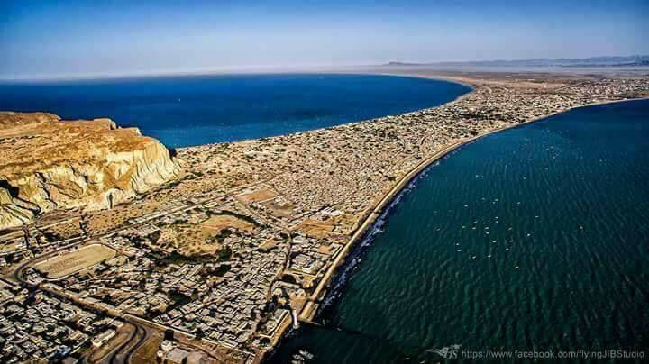
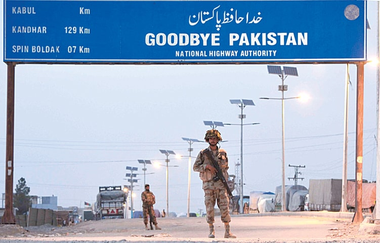

Welcome To Balochistan Cities Details
1- Quetta

Quetta is the provincial capital and largest city of the Pakistani province of Balochistan. It is also the 10th largest city in Pakistan. It was largely destroyed in the 1935 Quetta earthquake, but was rebuilt and has a population of 1,001,205 according to the census of 2017. Quetta is at an average elevation of 1,680 metres (5,510 feet) above sea level, making it Pakistan's only high-altitude major city. The city is known as the "Fruit Garden of Pakistan," due to the numerous fruit orchards in and around it, and the large variety of fruits and dried fruit products produced there.
2- Gawadar

Gawadar is the one the most famous Port of Pakistan . It is the main part of the CPEC Project working between Pakistan and China. It is also well known for the largest port of Pakistan. All the import , export of Pakistan is now a day carried out form here.
3- Chaman

Chaman is well known Border of Pakistan because it has Pakistan on one side and Afghanistan on the other side . Although both the countries has good relations with each others and good economics stratergies also . But in recent past both countries suffers Terrorism due to American attack on Afghanistan. But Alhamdullilah , now both countries are peaceful and hoping for more strong relations among each.